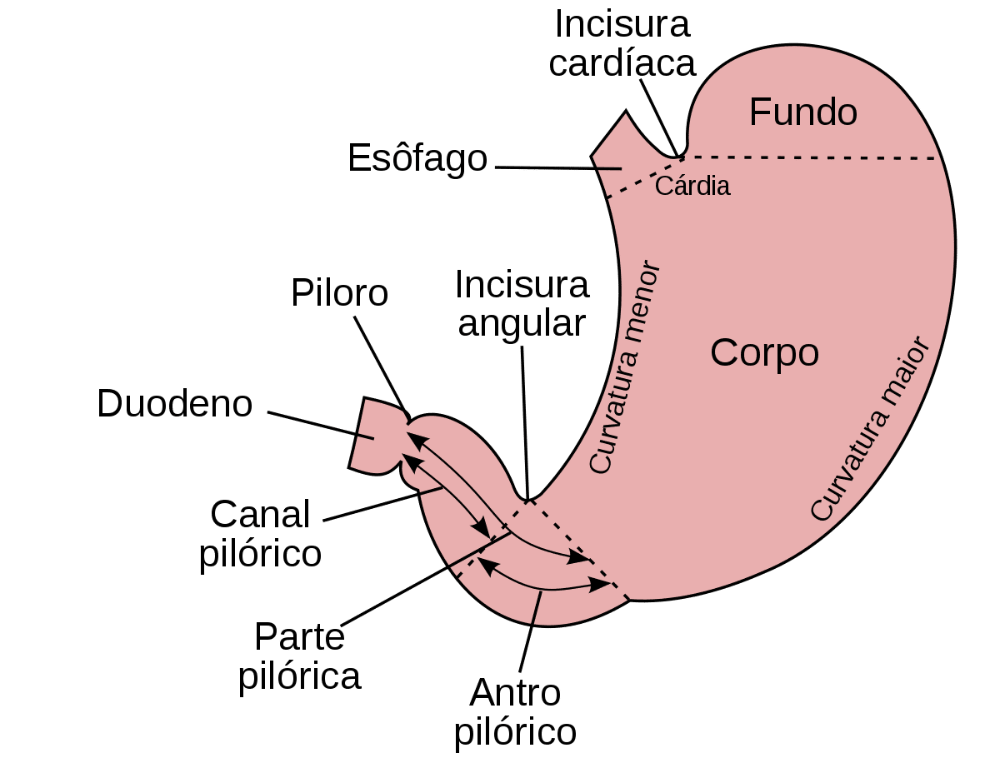
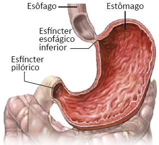
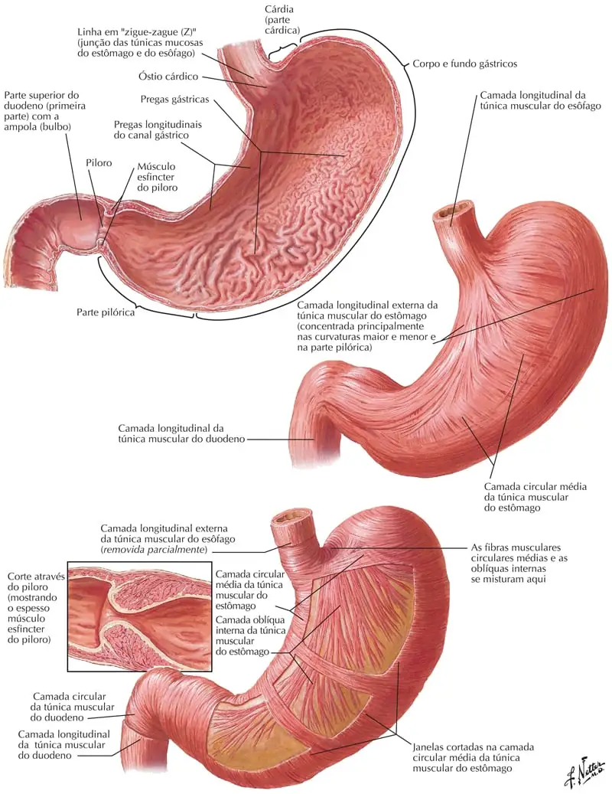
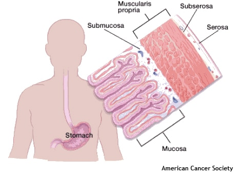
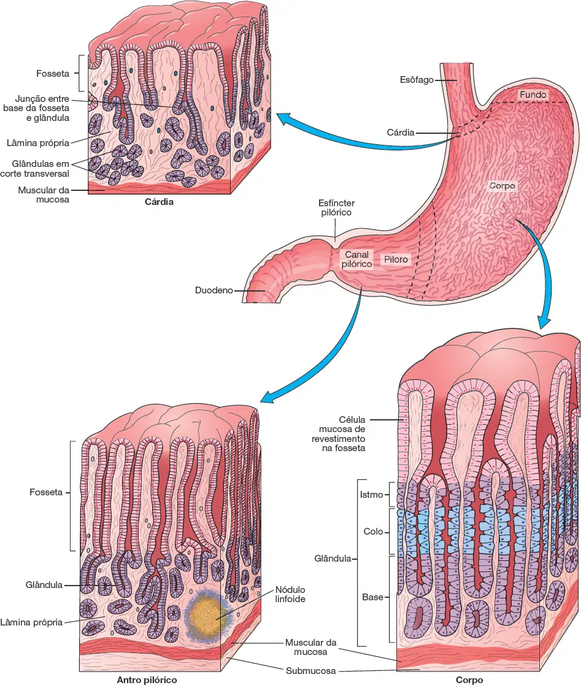
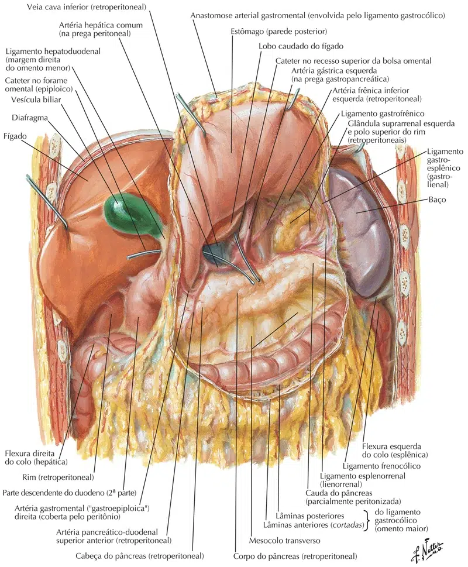
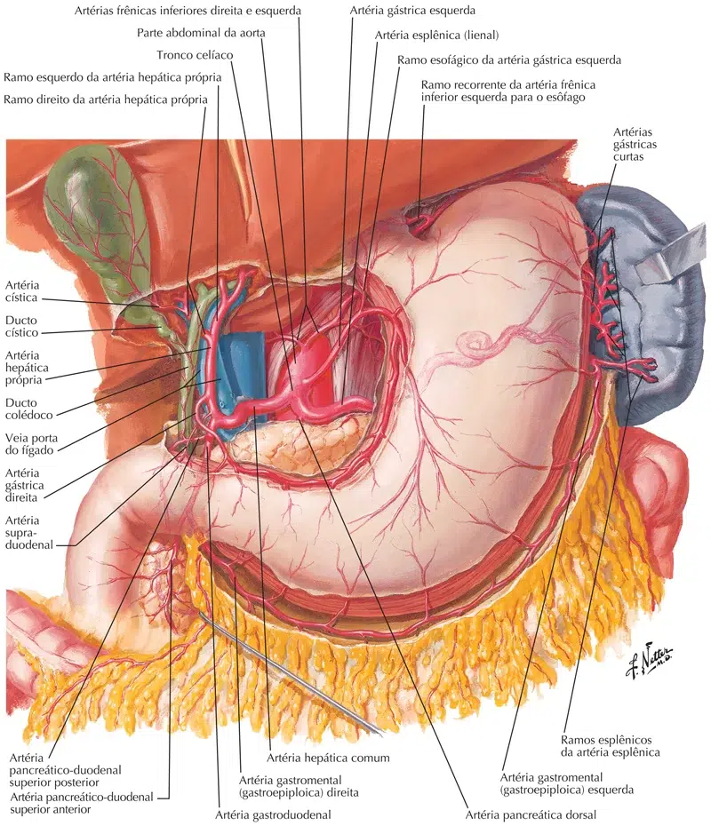
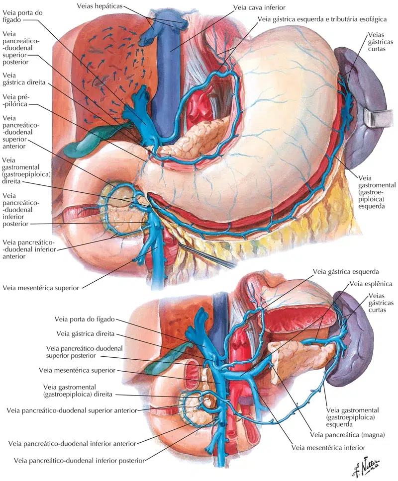
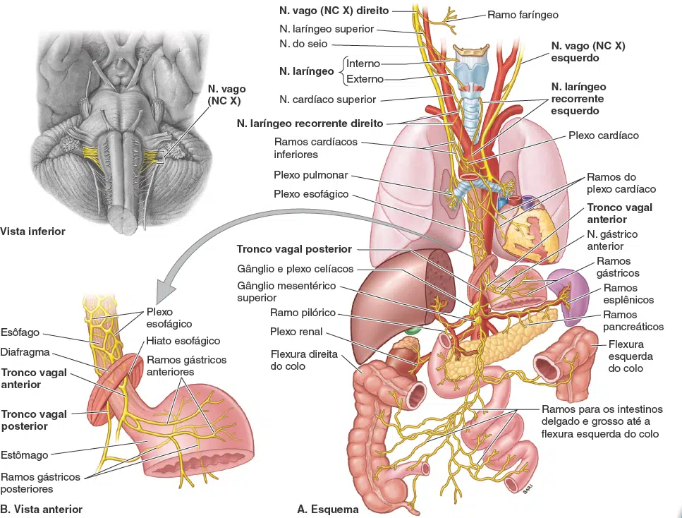
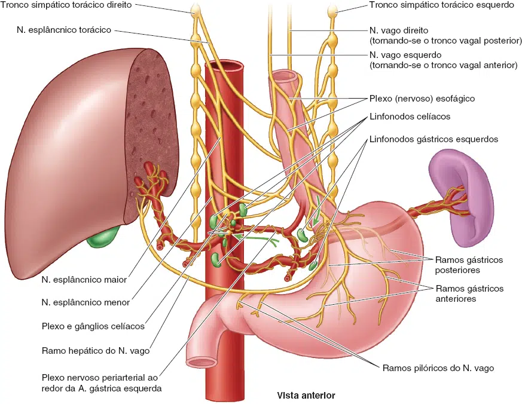

O estômago é um órgão digestivo intraperitoneal localizado entre o esôfago e o duodeno .
Tem uma forma de ‘J’ e apresenta uma curvatura menor e maior.
As superfícies anterior e posterior são suavemente arredondadas com uma cobertura peritoneal.
O estômago está dentro do aspecto superior do abdôme.
Encontra-se principalmente nas regiões epigástrica e umbilical, no entanto, o tamanho exato, a forma e a posição do estômago podem variar de pessoa para pessoa e com a posição e a respiração.
Tem como funções:
Misturar a saliva, os alimentos e o suco gástrico para formar o quimo.
Serve como reservatório para o alimento antes da liberação para o intestino delgado.
Secreta suco gástrico, que contém HCl (mata bactérias e desnatura proteínas), pepsina (começa a digestão de proteínas), fator intrínseco (auxilia na absorção de vitamina B12) e lipase gástrica (auxilia na digestão de triglicerídios).
Secreta gastrina no sangue.
Estrutura anatômica
O estômago tem quatro principais divisões anatômicas; cárdia, fundo, corpo e piloro:
Cárdia – envolve a abertura superior do estômago no nível T11.
Fundo – a parte arredondada, geralmente cheia de gás, superior e esquerda da cárdia.
Corpo – a grande porção central inferior ao fundo.
Piloro – Esta área conecta o estômago ao duodeno. É dividido em: antro pilórico, canal pilórico e esfíncter pilórico.
O esfíncter pilórico demarca o plano transpilórico no nível de L1.

Curvaturas maior e menor
As bordas medial e lateral do estômago são curvas, formando as curvaturas maior e menor:
Curvatura maior – forma a borda lateral longa e convexa do estômago.
Surgindo no entalhe cardíaco, arqueia para trás e passa inferiormente para a esquerda.
Ele se curva para a direita enquanto continua medialmente para alcançar o antro pilórico.
As artérias gástricas curtas e as artérias gastro-omentais direita e esquerda fornecem ramos para a maior curvatura.
Curvatura menor – forma a superfície medial mais curta, côncava e do estômago.
A parte mais inferior da curvatura menor, o entalhe angular, indica a junção do corpo e a região pilórica.
A curvatura menor dá aderência ao ligamento hepatogástrico e é suprida pela artéria gástrica esquerda e pelo ramo gástrico direito da artéria hepática.
NETTER: Frank H. Netter Atlas De Anatomia Humana. 7 ed. Rio de Janeiro, Elsevier, 2021.
Esfíncteres
Existem “dois esfíncteres” no estômago, localizados em cada orifício.
Eles controlam a passagem do material que entra e sai do estômago.

A junção esofagogástrica situa-se à esquerda da vértebra T XI no plano horizontal que atravessa a extremidade do processo xifoide.
Os cirurgiões e endoscopistas designam a linha Z, uma linha irregular em que há mudança abrupta da túnica mucosa esofágica para a túnica mucosa gástrica, como a junção.
Imediatamente acima dessa junção, a musculatura do pilar direito do m. diafragma que forma o hiato esofágico funciona como um esfíncter esofágico inferior extrínseco que contrai e relaxa, geralmente em conjunto com um revestimento muscular espessado de modo variável em torno do óstio cárdico do estômago.
Esfíncter pilórico
O esfíncter pilórico fica entre o piloro e a primeira parte do duodeno.
Controla a saída do quimo (mistura de alimentos e ácido gástrico) do estômago.
Em contraste com o esfíncter esofágico inferior, este é um esfíncter anatômico.
Contém músculo liso, que se restringe a limitar a descarga do conteúdo estomacal através do orifício.
O esvaziamento do estômago ocorre intermitentemente quando a pressão intragástrica supera a resistência do piloro.
O piloro é normalmente contraído para que o orifício seja pequeno e os alimentos possam permanecer no estômago por um período adequado.
O peristaltismo gástrico empurra o quimo através do canal pilórico para o duodeno para posterior digestão.

NETTER: Frank H. Netter Atlas De Anatomia Humana. 7 ed. Rio de Janeiro, Elsevier, 2021.
Parede e camadas
A parede do estômago está formada pelas seguintes partes:
Túnica mucosa: A camada mais interna, onde as enzimas digestivas e o ácido estomacal são produzidos.
A maioria dos cânceres de estômago se iniciam nesta camada.
A mucosa é formada por um epitélio colunar simples, que é coberto por uma camada mucosa alcalina protetora.

A camada epitelial contém numerosas invaginações, conhecidas como criptas gástricas, que se estendem mais profundamente em estruturas denominadas glândulas gástricas.
Tela submucosa: A camada de suporte.
Túnica muscular “Muscularis Própria”: Uma espessa camada de músculo que mistura o conteúdo do estômago.
Tela subserosa e Túnica Serosa: Duas camadas exteriores, que revestem o estômago.

JUNQUEIRA, Luiz Carlos U.; CARNEIRO, José. Histologia Básica: Texto e Atlas. 14. ed. Rio de Janeiro: Guanabara Koogan, 2023.
Túnica muscular
Formada por dois ou três estratos/camadas:
Longitudinal, externa;
Circular, média;
Oblíqua, interna.
NETTER: Frank H. Netter Atlas De Anatomia Humana. 7 ed. Rio de Janeiro, Elsevier, 2021.
Ligamentos
Existem quatro:
Ligamento hepatogástrico (omento menor): contém a artéria gástrica esquerda e o ramo gástrico direito da artéria hepática;
Ligamento gastrofrênico: do fundo gástrico até o diafragma;
Ligamento gastroesplênico / gastrolienal: parte cranial do corpo até o baço;
Gastrocólico / omento maior: da curvatura maior do estômago ao cólon transverso.
NETTER: Frank H. Netter Atlas De Anatomia Humana. 7 ed. Rio de Janeiro, Elsevier, 2021.

NETTER: Frank H. Netter Atlas De Anatomia Humana. 7 ed. Rio de Janeiro, Elsevier, 2021.
Vascularização
O suprimento arterial para o estômago provém do tronco celíaco e de seus ramos.
As anastomoses se formam ao longo da curvatura menor pelas artérias gástricas direita e esquerda e ao longo da curvatura maior pelas artérias gastro-omentais direita e esquerda:
A. gástrica direita – ramo da artéria hepática comum, que surge do tronco celíaco.
A. gástrica esquerda – surge diretamente do tronco celíaco.
A. gastro-omental direita – ramo terminal da artéria gastroduodenal, que surge da artéria hepática comum.
A. gastro-omental esquerda – ramo da artéria esplênica, que surge do tronco celíaco.
As veias do estômago correm paralelas às artérias.
As veias gástricas direita e esquerda drenam para a veia porta hepática.
A veia gástrica curta e as veias gastro-omentais esquerda e direita acabam drenando para a veia mesentérica superior.

NETTER: Frank H. Netter Atlas De Anatomia Humana. 7 ed. Rio de Janeiro, Elsevier, 2021.

NETTER: Frank H. Netter Atlas De Anatomia Humana. 7 ed. Rio de Janeiro, Elsevier, 2021.
Inervação
O estômago recebe inervação do sistema nervoso autônomo:
O suprimento nervoso parassimpáticosurge dos troncos vagais anteriores e posteriores, derivados do nervo vago originado os troncos vagais anterior e posterior.
O suprimento nervoso simpático surge dos segmentos da medula espinhal T6-T9 e passa para o plexo celíaco através do nervo esplâncnico maior e é distribuída pelos plexos ao redor das artérias gástricas e gastromentais.
Ele também carrega algumas fibras transmissoras de dor.

MOORE: Keith L. Anatomia orientada para a clínica. 9 ed. Rio de Janeiro: Guanabara Koogan, 2024.

MOORE: Keith L. Anatomia orientada para a clínica. 9 ed. Rio de Janeiro: Guanabara Koogan, 2024.